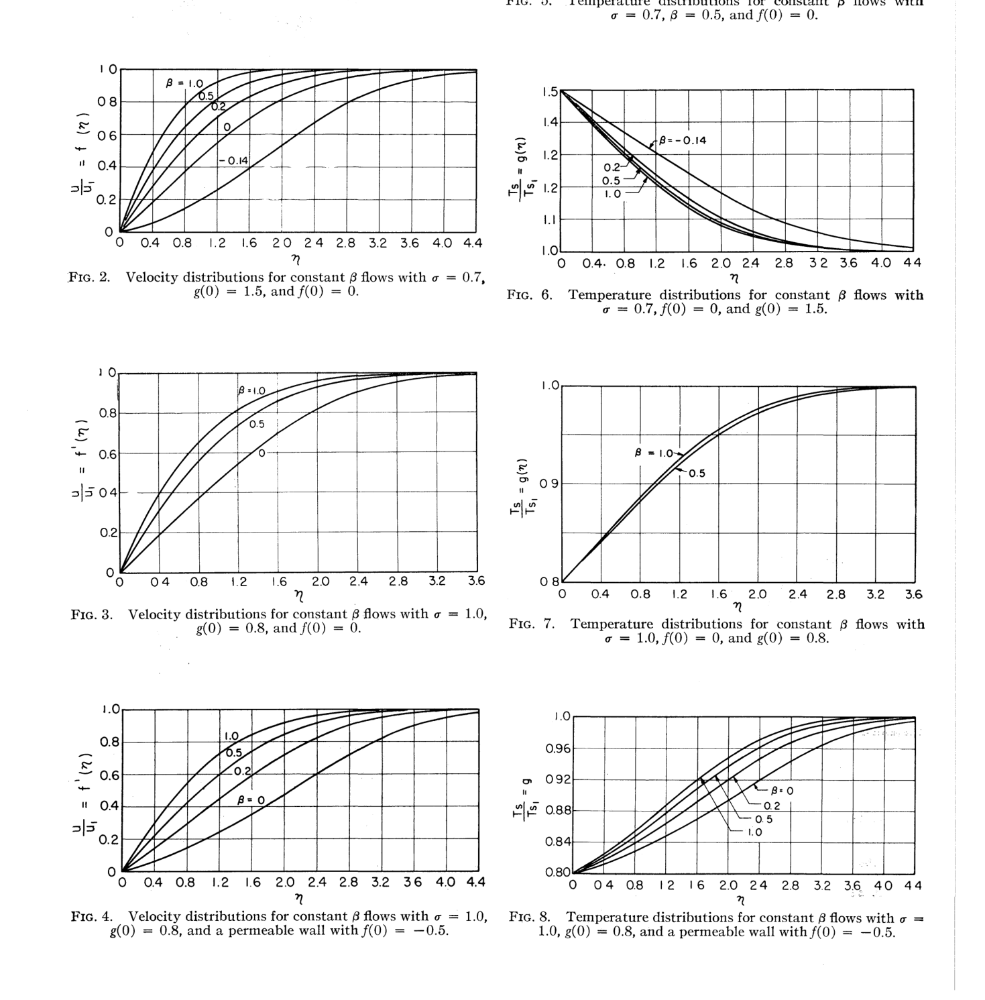
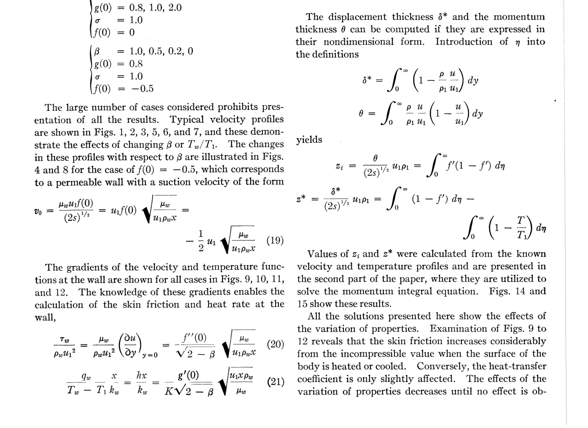
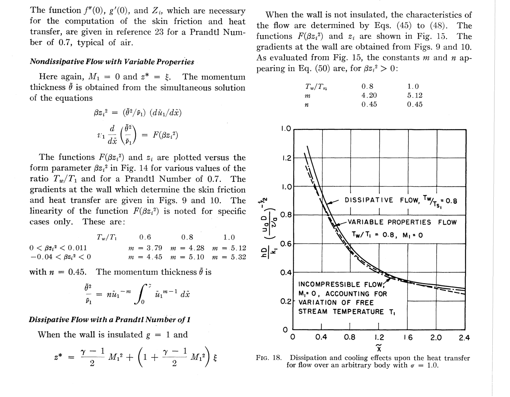
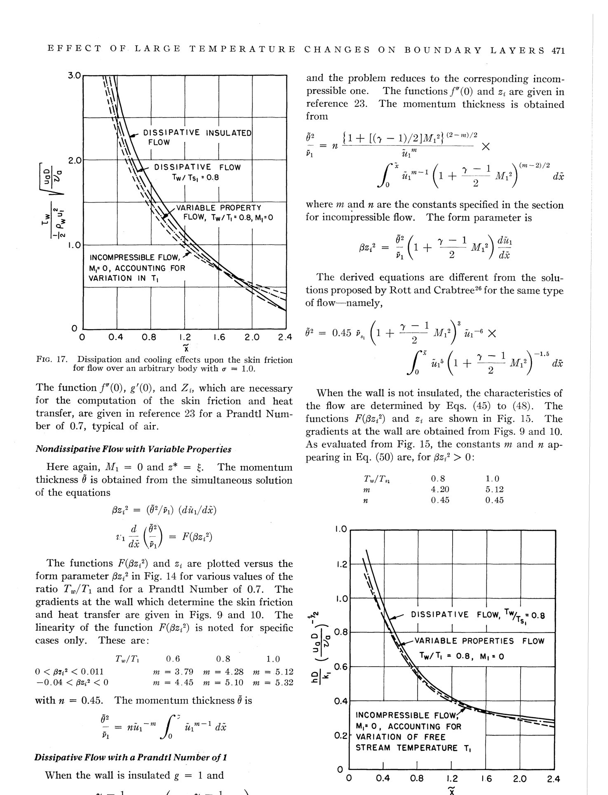

01中文摘要
理论研究变自由流速度层流边界层的摩阻与传热，考虑摩擦加热和物性变化，壁温恒定且密度-粘度乘积恒定。将边界层偏微分方程变换为常微分方程，用微分分析仪数值求解：低马赫数、Pr=0.7/1.0，以及全马赫数、Pr=1；并对 M>5、Pr=0.7 给出近似解。自由流马赫数按幂律变化，覆盖可渗透/不可渗透、绝热/恒温壁。文中给出等温壁任意自由流速度变化下的摩阻与热流计算方法。
02阅读说明
类型：理论/数值论文（Journal of the Aeronautical Sciences, 1954年7月, pp. 459–474），无实验。材料为16页全文文本与12项抓取图件（含Table 1、Table 2及Fig. 1–20选图）；PDF文本层公式与图注OCR错乱严重，已用原PDF第2–5、10–11页核对式(1)–(18)、(31)–(37)及边界条件。图内曲线不能逐点读取，定量值以正文与表注为准。信息完整度较高：相似解工况、积分法流程、数值例与误差估计均有交代；未给实验验证，高Mach近似误差无法估计。图件清单把TABLE 1与FIG. 1都标为‘图1’，属上游编号冲突，本记录按file原样使用。 文章类型：期刊
03一句话核心与三句话摘要
变自由流速度层流边界层：大温差与粘性耗散经相似解和积分法改变摩阻与热流，冷却延迟分离。
- 高超声速飞行器边界层需同时考虑大壁面温差、物性变化、变自由流速度和粘性耗散，但任意体形的完全解很困难。 AI概括
- Levy把二维定常层流边界层经Illingworth型变换化为常微分方程，在微分分析仪上计算σ=0.7与1.0、β=1.0/0.5/0.2/0/-0.14等工况，并给出高Mach近似和任意体形的一参数积分法。 原文明确
- 结论是壁-自由流温差强烈影响摩阻但热流系数变化不剧烈，耗散在加速流中提高摩阻、减速流中降低摩阻，冷却使分离点后移，且除低Mach外不能用(Pr)^{1/3}换算耗散流结果。 AI概括
04核心内容清单
| 要点 | 类型 | 重要性 | 原文依据 | 属性 |
|---|---|---|---|---|
| 用Illingworth型变换把含变自由流速度、变物性和耗散的二维层流边界层化为常微分方程(14)(15)，以β=(2s/u1)(du1/ds)表征自由流速度分布。 | 理论方法 | A | p460–463，式(5)–(15) | 原文明确 |
| 得到三类可解情形：M1→0任意σ；σ=1任意Mach；M1→∞任意σ，分别对应式(16)(17)(18)。 | 理论方法 | A | p463，式(16)–(18) | 原文明确 |
| 计算覆盖β=1.0、0.5、0.2、0、-0.14，g(0)=0.6–2.0，σ=0.7与1.0，以及f(0)=0与-0.5（抽吸）。 | 计算工况 | A | p464，第6节工况表 | 原文明确 |
| 壁面加热或冷却会显著增大摩阻，而热流系数只受轻微影响；物性变化影响随β减小而减弱，β=0时消失。 | 核心结果 | A | p464–465，图1–13 | 原文明确 |
| 冷却壁面使分离发生在更大的逆压梯度处，即分离点向更大减速区域移动。 | 核心结果 | A | p459摘要；p465；p472 | 原文明确 |
| 加入耗散项后，加速流中摩阻增大、减速流中摩阻减小；热流系数有同样趋势但幅度较小。 | 核心结果 | A | p459摘要；p467；p472 | 原文明确 |
| σ从1降到0.7时，β=1的耗散流摩阻最多增加10%；低Mach约1%，高Mach约10%，故σ=1的摩阻结果可近似用于常壁温体。 | 定量结论 | A | p459摘要；p469 | 原文明确 |
| 热流系数不能用(Pr)^{1/3}从σ=1结果换算，除低Mach非耗散流外会带来很大误差。 | 定量结论 | A | p459摘要；p469 | 原文明确 |
| σ=0.7、β=1.0时恢复因子首次近似为r=0.798；平板流β=0时r=√σ。 | 定量结果 | A | p468，式(32)(33) | 原文明确 |
| 与Brown & Donoughe比较，摩阻与热流吻合5%以内；Tw/T1=2.0时厚度最大偏差约20%。与Levy-Seban比较，摩阻/热流吻合5%，厚度偏差约10%。 | 验证 | A | p465 | 原文明确 |
| 任意体形积分法由动量积分方程与一参数剖面构成，驻点附近确定初始θ，再积分式(50)；算例显示耗散减小θ、改变βz²，冷却降低摩阻并延迟分离。 | 方法与应用 | A | p469–472，式(36)–(50)，图17–19 | 原文明确 |
| 高Mach近似使用指数剖面且忽略法向压力梯度，误差无法估计，导出的解并不正确，只能作趋势比较并须极谨慎使用。 | 作者限制 | A | p469 | 原文明确 |
05引言：研究问题与领域缺口
引言（p459–460）指出，层流边界层的摩阻与热流对高速飞行器设计十分重要；自Prandtl以来虽有许多解法，但同时包含耗散、物性变化、变自由流速度和壁温的完整分析仍很困难。常自由流速度的完全解已由Chapman & Rubesin与Crocco给出；变自由流速度使问题复杂度大增，必须引入简化假设。本文假设常壁温与粘度-密度乘积为常数，研究三类流动：(1) 非耗散流（M1→0），任意常Prandtl数，自由流速度沿体面为距离的幂函数；(2) 耗散流，Prandtl数为1，覆盖整个Mach数范围，自由流Mach数按M1=P(2s)^{β/2}变化；(3) 高Mach数（M1>5）耗散流，任意常Prandtl数，同样取M1=P(2s)^{β/2}。作者指出Brown & Donoughe只算过第(1)类，另两类尚未研究；本文目标是重算非耗散解、给出第(2)(3)类数值解、把三类结果推广到任意体形，并通过具体算例说明耗散与物性变化的影响（p460）。
06流动条件与几何构型
| 项目 | 数值/描述 | 依据 | 备注 |
|---|---|---|---|
| 流动类型 | 定常、二维、层流边界层；气体常比热、常Prandtl数 | p460，第1节 | |
| 物性假设 | μρ=常数；χ=μρ/(μ1ρ1)=1 | p460–461 | |
| 壁温条件 | 常壁温Tw=Ts1g(0)，g(0)=1-K，K=1-Tw/Ts1；另计算绝热壁g=1 | p461–463 | |
| 自由流速度分布 | β=(2s/u1)(du1/ds)=常数；M1=P(2s)^{β/2} | p461–463 | |
| Prandtl数σ | 0.7（空气典型值）与1.0 | p459摘要；p464 | |
| β取值 | 1.0、0.5、0.2、0、-0.14 | p464 | |
| 壁温比g(0)=Tw/Ts1 | 0.6、0.8、1.0、1.5、2.0 | p464 | |
| 壁面渗透条件 | f(0)=0（不可渗透）与f(0)=-0.5（抽吸，抽吸速度按式(24)） | p462–464，式(24) | |
| Mach数范围 | M1→0（非耗散）；σ=1时任意Mach；M1>5（高Mach近似）；以及M1→∞极限 | p460，第1节；p463–468 | |
| 法向压力梯度 | 取∂p/∂y=0；高Mach近似中忽略法向压力梯度被作者明确列为缺陷 | p460；p469 | |
| 自由流滞止温度 | 沿x不变（dTs1/dx=0） | p460 | |
| 任意体形算例 | U1/Ua=x(x+5)/(x+1)²；Ua=304 m/s；Ta=241.5 K；参考点a在上游未扰动流，a到自由流等熵 | p472 | |
| 激波与真实气体效应 | 未考虑激波干扰、真实气体效应与转捩；高Mach下边界层方程本身失效 | p460；p469 |
07核心现象与关键参数
| 参数 | 定义 | 数值 | 关系/说明 | 依据 |
|---|---|---|---|---|
| β | 自由流速度分布参数，β=(2s/u1)(du1/ds) | 1.0、0.5、0.2、0、-0.14 | β=0为平板流；β>0加速/顺压，β<0减速/逆压 | p461–464 |
| K | K=1-Tw/Ts1 | 由g(0)=1-K给出，对应g(0)=0.6–2.0 | 控制壁面热边界条件 | p459术语表；p463 |
| g(0) | 壁面温度比Tw/Ts1 | 0.6、0.8、1.0、1.5、2.0 | g(0)<1为冷却壁，g(0)>1为加热壁 | p463–464 |
| σ | Prandtl数 | 0.7、1.0 | 控制热边界层与动量边界层相对厚度及恢复因子 | p459；p464 |
| M1 | 自由流Mach数；M1=P(2s)^{β/2} | 0、任意值、>5、∞ | 决定耗散项与可压缩性 | p460–463 |
| χ | χ=μρ/(μ1ρ1) | 取1（μρ=常数） | 物性变化假设；简化变换后方程 | p461 |
| r | 恢复因子r=(Taw-T1)/(u1²/2cp) | σ=0.7、β=1.0时0.798；平板r=√σ | 由高Mach能量方程积分得到 | p468，式(32)(33) |
| z*、zi | 无量纲位移厚度与动量厚度 | 由速度/温度剖面积分得到，随β与g(0)变化 | 用于动量积分方程与F(βz²)关系 | p464；图14、15 |
| F(βz²) | 积分法中与壁面摩阻相关的剖面函数 | 低Mach与耗散流分别见图14、图15；局部可线性化 | F(βz²)=−mβz²−n；系数m、n随壁温条件变化 | p470–471 |
| a、A | 壁面速度梯度与温度梯度参数：f''(0)=-a，g'(0)=-KA | 由高Mach近似式(34)(35)确定 | 用于指数剖面法求Cf与h | p468 |
| Ua、Ta | 任意体形算例参考点的速度与温度 | Ua=304 m/s（997.4 ft/s）；Ta=241.5 K（460°R） | 用于无量纲化与算例 | p472 |
08方法与数据
理论部分从二维定常、常Prandtl数与常比热的层流边界层连续性、动量和能量方程(1)–(3)出发，采用Illingworth型变换(5)–(8)把问题化为以η为自变量的常微分方程；引入β=(2s/u1)(du1/ds)作为自由流速度分布参数，假设μρ=常数并取χ=μρ/(μ1ρ1)=1。最终动量与能量方程为(14)(15)；在M1→0、σ=1任意Mach、M1→∞三种条件下分别化为(16)(17)(18)。边界条件为η=0时f=0或常数、f'=0、g=1-K（即Tw=(1-K)Ts1），η→∞时f'=1、g=1（p461–463）。精确解在机械式微分分析仪上求得：同时积分三阶动量方程与二阶能量方程共五次积分，先假定f''(0)与g'(0)，再试凑满足无穷远条件；每次积分估计精度1%，五步总误差预计不超过5%，壁面梯度取三位有效数字，误差约小于1%（p473）。计算覆盖β=1.0、0.5、0.2、0、-0.14，g(0)=0.6、0.8、1.0、1.5、2.0，σ=0.7与1.0，以及f(0)=0（不可渗透）和f(0)=-0.5（抽吸）两类壁面（p464）。高Mach近似把式(15)化为式(18)，用Ringleb与参考文献14的指数剖面法，令f''(0)=-a、g'(0)=-KA，由式(34)(35)确定壁面梯度（p467–468）。第二部分从von Kármán-Pohlhausen积分动量方程(36)与壁面边界条件(37)出发，采用一参数剖面族(40)，得到θ的常微分方程(41)–(50)，并用F(βz²)线性化求任意体形近似解（p469–471）。数值算例取自由流速度U1/Ua=x(x+5)/(x+1)²、Ua=304 m/s、Ta=241.5 K，参考点a位于体前未扰动流并假设到自由流等熵（p472）。
| 项目 | 内容 | 依据 | 备注 |
|---|---|---|---|
| 控制方程 | 二维定常层流连续性、动量、能量方程(1)–(3)；常Prandtl数与常比热 | p460 | |
| 变换 | Illingworth型变换(5)：s=∫μ1ρ1u1dx，η∝∫(T1/T)dy；u=u1f'，Ts=Ts1g，ψ=(2s)^{1/2}f | p460–461，式(4)–(8) | |
| 相似方程 | 动量(14)：f'''+ff''+β(g-f'^2)=0；能量(15)含耗散项；三种极限化为(16)(17)(18) | p463，式(12)–(18) | |
| 边界条件 | η=0：f=0或常数、f'=0、g=1-K；η→∞：f'=1、g=1 | p463 | |
| 精确解工具 | 机械式微分分析仪；五次积分；假定f''(0)、g'(0)试凑；每次积分约1%，总计≤5%；梯度三位有效数字 | p473，附录A | |
| 计算工况 | β=1.0/0.5/0.2/0/-0.14；g(0)=0.6/0.8/1.0/1.5/2.0；σ=0.7/1.0；f(0)=0/-0.5 | p464 | |
| 高Mach近似 | M1>5时式(15)化为(18)；指数速度/温度剖面；f''(0)=-a、g'(0)=-KA由式(34)(35)给出 | p467–468 | |
| 积分法 | von Kármán-Pohlhausen动量积分方程(36)+壁面条件(37)；一参数剖面(40)；θ方程(41)–(50)；F(βz²)线性化 | p469–471 | |
| 初始条件 | 驻点x→0极限给出初始θ；式(49)用于小区域，式(50)用于推进 | p470–471 | |
| 数值算例 | U1/Ua=x(x+5)/(x+1)²，Ua=304 m/s，Ta=241.5 K；计算不可压、非耗散、耗散常壁温、耗散绝热四类 | p472 | |
| 验证方式 | 与Brown & Donoughe、Levy-Seban、文献19/27比较；无实验验证 | p465；p472 | |
| 误差来源 | 微分分析仪积分误差；高Mach指数剖面法误差无法估计；法向压力梯度被忽略；一参数剖面近似 | p469；p473 |
09核心推导与公式
先对二维定常可压缩层流边界层作Illingworth型变换，把变自由流速度、变物性和粘性耗散问题化为以β为参数的两个常微分方程；在三种可相似化的极限下求精确/数值解。随后把相似解提供的剖面函数用于von Kármán-Pohlhausen动量积分方程，以单个形状参数描述剖面，从而把方法推广到任意体形。
关键假设
- 定常、二维、层流边界层；气体常比热、常Prandtl数。
- μρ=常数，且χ=μρ/(μ1ρ1)=1。
- 常壁温Tw=Ts1g(0)；另讨论绝热壁g=1。
- 自由流滞止温度沿x不变，dTs1/dx=0。
- 自由流速度分布为幂函数，β=(2s/u1)(du1/ds)=常数，M1=P(2s)^{β/2}。
- 法向压力梯度取零（∂p/∂y=0）；高Mach近似仍沿用此假设，作者后来明确指出这是缺陷。
- 边界层方程在极高Mach下本身失效；高Mach结果只用于趋势比较。
推导过程
从连续性、动量和能量方程出发。连续性用流函数自动满足；动量方程含压力梯度与粘性剪切；能量方程以滞止温度写出，含导热与粘性耗散项。
定义流函数使连续性自动满足，并把x、y替换为s与η：s为μ1ρ1u1沿x的积分，η含T1/T的壁法向积分；同时给出∂/∂y与∂/∂x的链式关系。
令无量纲速度u/u1=f'(η)、滞止温度Ts/Ts1=g(η)，并由式(6)积分得ψ=(2s)^{1/2}f(η)。这一步假定方程可化为η的单变量常微分方程。
代入式(5)–(8)后，动量方程含χf''、ff''与β(f'^2−T/T1)；能量方程含χg'、fg'及(1/σ−1)的焓-动能耦合项。χ取1以简化。
由Ts=T+u²/2cp可得T/T1=g+(γ−1)/2·M1²(g−f'^2)。再代入动量与能量方程，并利用β定义，得到最终的相似方程。
最终得到式(14)(15)。式(14)把速度剖面与β、g耦合；式(15)含Prandtl数、耗散项及其M1²权重。
式(14)(15)成为常微分方程需满足下列之一：(1) M1→0或非耗散流，任意常σ，u1=P(2s)^{1/2}；(2) σ=1且M1=P(2s)^{β/2}，Mach数不受限制且含耗散；(3) M1→∞且M1=P(2s)^{β/2}，任意σ，含耗散但仅适用于高Mach。对应能量方程分别化为(16)(17)(18)。
壁面η=0处无滑移、给定常壁温或抽吸速度；无穷远η→∞处速度与温度趋于自由流值。对应物理条件为y=0时v=0或v0(x)、u=0、Tw=(1−K)Ts1；y→∞时u=u1、Ts=Ts1。
对式(14)(16)(17)在微分分析仪上求精确解；对式(14)(18)用近似法。高Mach、绝热壁时式(18)可积分给出温度分布(31)、绝热壁温与恢复因子(32)，M1→∞时恢复因子趋于(33)；平板β=0时r=√σ，σ=0.7、β=1.0时首次近似r=0.798。非绝热壁用指数剖面，壁面梯度f''(0)=-a、g'(0)=-KA由式(34)(35)确定。
对任意体形，从von Kármán-Pohlhausen积分动量方程出发，并用壁面处法向动量平衡给出壁面剪切条件；δ*与θ由速度剖面积分定义。
假设速度与温度剖面属于一参数族，f'与g只通过β与z*依赖当地条件；代入积分方程后得到关于动量厚度θ的一阶方程(41)–(44)，再无量纲化为(45)–(48)。F(βz²)与z*由相似解给出，局部线性化后得到式(50)。
在驻点x→0的极限确定初始动量厚度：式(49)给出θ²/ν1的极限；随后由式(50)沿x积分，得到θ(x)，再由局部摩阻与热流关系得到Cf与h。
适用边界：常μρ与χ=1、常壁温、常Prandtl数、β为常数、∂p/∂y=0等假设限制适用范围；高Mach近似用指数剖面且忽略法向压力梯度，误差无法估计，作者明确称其结果不完全正确；微分分析仪总误差约5%，Tw/Ts1>1.5时速度剖面对初值敏感；积分法的一参数剖面与F线性化是近似；无实验验证，未真正计算分离流。
10结果：主要发现与关键证据
相似解结果（p462–466，图1–13）：速度与温度剖面随β、g(0)、抽吸和Prandtl数变化；当壁面被加热或冷却时，摩阻相对不可压值显著增大，而热流系数只受轻微影响；物性变化的影响随β减小而减弱，到平板流β=0时完全消失，验证了μρ=常数时平板流的经典结果（p464–465）。β=-0.14的结果显示，冷却壁面时分离发生在更大的逆压梯度处，即分离点向更大减速区域移动（p465）。与Brown & Donoughe比较，摩阻与热流吻合在5%以内；但Tw/T1增大时厚度吻合变差，Tw/T1=2.0时位移厚度与动量厚度最大偏差约20%（p465）。与Levy-Seban近似解比较，摩阻与热流至少吻合5%，厚度最大偏差约10%（p465）。耗散流（p466–469，图13–15）：σ=1时，绝热壁有g=1的特别解，动量方程化为Hartree方程(23)；常壁温时式(14)(17)联立，其解可由非耗散、σ=1的解通过替换Ts/Ts1与M1得到。高Mach近似由式(18)积分给出温度分布(31)、恢复因子(32)与M1→∞极限(33)；平板流β=0时恢复因子等于Prandtl数的平方根，σ=0.7、β=1.0时首次近似为r=0.798（p468）。σ从1降到0.7时，β=1的耗散流摩阻最多增加10%；非耗散流摩阻实际上与Prandtl数无关，因此σ=1的结果可用于常壁温体，误差在Mach 0–5或更大范围内不超过10%；但热流系数不能用同样论证，因为图10与图13曲线差别太大（p469）。任意体形积分法（p469–472，图14–19）：由式(36)(37)与一参数剖面得到θ方程，F(βz²)与z*由相似解给出；在驻点附近由式(49)确定初始θ，再由式(50)推进。数值算例表明：加入耗散项会减小动量厚度θ；对加速流提高形状参数βz²，对减速流降低βz²，二者综合使正自由流速度梯度下摩阻增大，而负梯度下相互抵消；分离点向驻点方向移动（p472）。冷却降低摩阻并延迟分离，热流不受影响；绝热任意体与文献19、27的结果吻合约10%（p472）。
| 发现 | 证据 | 证据类型 | 强度 | 位置 | 属性 |
|---|---|---|---|---|---|
| 壁面与自由流的温差强烈影响摩阻系数，而热流系数不受根本性影响。 | 摘要p459明确给出该结论；p464–466图1–13显示加热或冷却时Cf显著偏离不可压值，而h变化较小。 | 核心结论 | 强 | p459摘要；p464–466 | 原文明确 |
| 物性变化对剖面的影响随β减小而减弱，平板流β=0时完全消失。 | p464–465指出effects of variation of properties decreases until no effect is observed for flat-plate flow (β=0)，验证μρ=常数平板流经典结果。 | 计算结果 | 强 | p464–465 | 原文明确 |
| 冷却壁面使分离发生在更大的逆压梯度处，分离点向更大减速区域移动。 | p459摘要明确；p465由β=-0.14结果说明；p472数值算例再次给出cooling delays separation。 | 核心结论 | 强 | p459；p465；p472 | 原文明确 |
| 加入耗散项后，加速流中摩阻增大、减速流中摩阻减小；热流有同样趋势但幅度较小。 | p459摘要与p467、p472均明确；p472解释为耗散减小θ、改变βz²的综合结果。 | 核心结论 | 强 | p459；p467；p472 | 原文明确 |
| σ从1降到0.7时，β=1的耗散流摩阻最多增加10%；低Mach约1%，高Mach约10%。 | p469明确at most by 10 per cent；p459摘要给出1%与10%的量级。 | 定量结论 | 强 | p459；p469 | 原文明确 |
| 热流系数不能用(Pr)^{1/3}换算，除低Mach非耗散流外误差过大。 | p459摘要明确multiplication by (Prandtl Number)^{1/3} does not lead to the correct answer except for low Mach；p469指出图10与图13曲线差别太大。 | 定量结论 | 强 | p459；p469 | 原文明确 |
| σ=0.7、β=1.0时恢复因子首次近似为0.798；平板流恢复因子为√σ。 | p468式(32)(33)及其后文字明确；并称Mach数对恢复因子影响相对较小。 | 定量结果 | 强 | p468 | 原文明确 |
| 与Brown & Donoughe比较，摩阻/热流吻合5%以内，但Tw/T1=2.0时厚度偏差可达20%。 | p465明确agreement within 5 per cent，maximum deviation of 20 per cent noted for Tw/T1=2.0。 | 验证 | 强 | p465 | 原文明确 |
| 任意体形积分法能复现耗散与冷却的主要趋势，绝热体结果与文献19、27吻合约10%。 | p472明确agreement within 10 per cent；图17–19给出Cf与h随M1²的变化。 | 方法验证 | 强 | p472，图17–19 | 原文明确 |
| 高Mach近似因指数剖面和忽略法向压力梯度而不可靠，误差无法估计。 | p469明确the approximate method is subject to error, this error cannot be estimated；并称the pressure gradient in the direction normal to the body cannot be neglected, and the derived solutions are not correct。 | 作者限制 | 强 | p469 | 原文明确 |
| 微分分析仪解的总误差预计不超过5%，但Tw/Ts1>1.5时速度剖面对初值敏感。 | p473附录A给出每次积分1%、五次积分≤5%；并指出大壁温比时剖面不确定性大。 | 误差估计 | 中 | p473 | 原文明确 |
11机制解释与论证链
大壁面温差改变近壁密度与粘度：冷却使近壁气体更密、速度梯度更大，从而显著提高摩阻，但由于温度剖面形状主要由Prandtl数控制，热流系数变化不剧烈。粘性耗散把动能转化为焓，在加速流中使边界层更饱满、摩阻增大；在减速流中则使摩阻减小。冷却提高近壁动量通量，使边界层能承受更大逆压梯度，故分离点向更大减速区域移动。Prandtl数从1降到0.7改变热边界层相对厚度与恢复因子，对摩阻影响有限（≤10%），但对热流影响显著，故不能简单用(Pr)^{1/3}换算。
12讨论：结论、贡献与局限
作者在p469对高Mach近似给出强烈保留：用指数剖面求解式(14)(18)的方法本身有误差，且因没有同问题的精确解而无法估计；更严重的是，边界层内法向压力梯度不能忽略，所导出的解并不正确；这些结果只能用于说明Prandtl数从1降到0.7时，在法向压力取常数的前提下大Mach摩阻几乎不变。由此，高Mach部分的结论应‘极谨慎’使用。对积分法，作者指出任意体形只能近似求解，一参数剖面族与F(βz²)线性化是主要近似；初始条件由驻点极限得到。全文还反复强调：常μρ、常壁温、常Prandtl数与无激波干扰是结果适用的前提；高Mach下边界层方程本身失效，真实流动还会有激波干扰与法向压力梯度。作者没有给出实验验证，也没有计算真正的分离流，只用β=-0.14的趋势说明冷却使分离推迟。
作者结论
对变自由流速度层流边界层，大壁面温差强烈改变摩阻但只轻微改变热流系数；冷却使边界层承受更大逆压梯度并延迟分离；粘性耗散在加速流中提高摩阻、在减速流中降低摩阻。Prandtl数从1降到0.7对摩阻的影响不超过约10%，故σ=1的摩阻结果可近似用于空气；但热流不能用(Pr)^{1/3}简单换算，除低Mach非耗散流外误差很大。高Mach近似结果只能用于趋势说明并须极谨慎。
主要贡献
- 给出变自由流速度、变物性、含粘性耗散的层流边界层相似方程及三类可解极限。
- 在微分分析仪上系统计算β、壁温比、Prandtl数与抽吸组合下的速度/温度剖面、壁面梯度、摩阻与热流。
- 给出高Mach极限的温度分布、恢复因子及壁面梯度近似式。
- 建立可用于任意体形的一参数积分方法，并以具体算例展示耗散、冷却与物性变化的影响。
局限与未解决问题
常μρ、常壁温、常Prandtl数、β常数与∂p/∂y=0等假设限制适用性；高Mach近似误差无法估计且解不完全正确；微分分析仪精度约5%，大壁温比时剖面不确定；一参数积分法是近似；无实验验证；未计算真实分离流；未考虑激波干扰、真实气体与转捩。
13对高速流动与工程的意义
在CFD之前系统建立了大温差、变自由流速度与粘性耗散共同作用下的层流边界层相似解和工程积分法，明确指出摩阻与热流对壁温、Prandtl数和耗散的响应不同，为高速飞行器热防护与摩阻估算提供了可用的剖面数据和计算框架，也给出了高Mach近似适用性的警示。
14核心图件




15可引用原文素材
| 原文短句 | 可支持的观点 | 位置 | 使用建议 |
|---|---|---|---|
| “not affected radically” | 热流系数不受壁-自由流温差的根本影响 | p459，摘要 | 核心结论 |
| “delays separation” | 冷却延迟分离 | p472 | 核心结论 |
| “accelerating flow” | 耗散在加速流中提高摩阻 | p459，摘要 | 核心结论 |
| “r = 0.798” | 恢复因子定量值 | p468 | 定量结果 |
| “agreement within 5 per cent” | 与Brown & Donoughe的摩阻/热流吻合 | p465 | 验证 |
| “used with extreme caution” | 高Mach近似须谨慎 | p469 | 限制 |
| “cannot be neglected” | 法向压力梯度不可忽略 | p469 | 限制 |
| “low Mach Number flows” | (Pr)^{1/3}换算仅低Mach适用 | p459，摘要 | 限制 |
16最终核验
| 核验项 | 结论 |
|---|---|
| 仅基于全文 | 仅使用bundle文本、图注及原PDF第2–5、10–11页核对公式；未使用外部知识。图内曲线未逐点读取。 |
| A 级要点有依据 | A级结论均给出页码、式号、图号或表号；式(1)–(18)、(31)–(37)见p460–463、p468–469，定量结论见p465、p468–469、p472–473。 |
| 属性标注 | three_sentence、core_points、findings均标注原文明确/AI概括/AI推断；作者限制单列。 |
| 覆盖范围 | 覆盖摘要、引言、第1部分相似解（含三类极限、边界条件、精确解与高Mach近似）、第2部分积分法、数值算例、附录误差估计及参考文献要点；未逐条讨论Table 1/Table 2中所有前人方法。 |
| 无编造 | 未编造页码、式号或数据。OCR严重错乱处（式(3)、式(31)–(35)、积分方程定义）以原PDF图像核对或仅作文字概述，未强行补写不确定的代数细节；恢复因子式(32)按PDF核对后录入。 |
需回原文确认
- 图件清单把TABLE 1（p3）与FIG. 1（p4）都标为‘图1’，编号冲突；本记录按file原样使用，是否需要上游修正？
- 高Mach近似的误差无法估计，且作者称解不完全正确；其趋势结论在多大Mach范围内仍可定性使用？
- 常μρ与χ=1假设在Tw/Ts1=2.0这类大温差下是否仍足够？厚度偏差20%是否主要源于此？
- 微分分析仪在Tw/Ts1>1.5时速度剖面对初值敏感，图20的A、B解差异是否影响摩阻/热流结论？
- 积分法只用一参数剖面且F(βz²)局部线性化，对强逆压或接近分离的流动误差多大？
- 论文未真正计算分离流，仅以β=-0.14说明冷却推迟分离；该趋势能否外推到完全分离？
- (Pr)^{1/3}换算对热流不适用，是否存在更好的跨Prandtl数换算因子？文中未给出。
- 无实验验证；这些相似解与积分法在真实风洞条件下的适用性如何？
17关联文献
依据标签、板块、构型与作者脉络自动关联，可据此追踪同一问题的前序与后续工作。
18引用格式
选择期刊风格后复制；出处保留原刊名。BibTeX 可直接用于 LaTeX。
引用格式
Levy, S. 1954 Effect of Large Temperature Changes (including Viscous Heating) Upon Laminar Boundary Layers with Variable Free-Stream Velocity. Journal of the Aeronautical Sciences. https://doi.org/10.2514/8.3088
PDF上传 PDF 并更新本页
本页缺少全文、摘要或图件时，可在浏览器本地补入 PDF。解析完全在本机完成，不上传网络；完成后会更新本页的 PDF 打开链接、原摘要、IMRaD 机器抽取、关键句与含图页面。复杂的公式语义与中文深度解读仍以原文和既有精读记录为准。